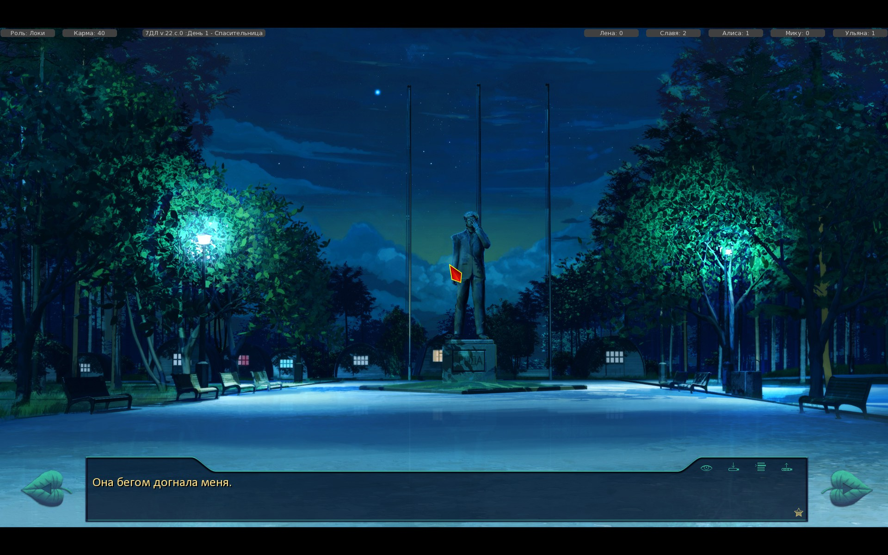
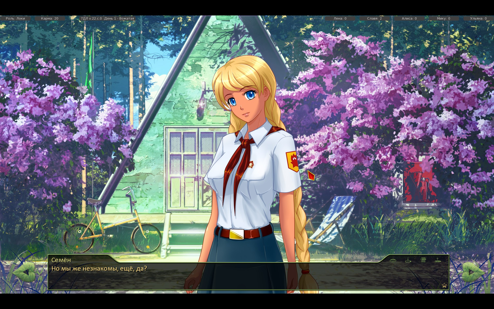

Мику DJ
Хвосты текста от Мику 7ДЛ.Семен не был ни в какой реквизиторской и не получал рубашку в тихий час 3 дня.Про второе несовпадение уже написал HOXAJI
Отредактировано HoRRicH (2016-04-17 00:04:19)

7 дней лета |
Вы здесь » 7 дней лета » Логика » Нестыковки

Хвосты текста от Мику 7ДЛ.Семен не был ни в какой реквизиторской и не получал рубашку в тихий час 3 дня.Про второе несовпадение уже написал HOXAJI
Отредактировано HoRRicH (2016-04-17 00:04:19)
М-м-м... доброго времени суток. Я конечно хз, насколько это подходит под тему "несостыковок", но ладно, попытка - не пытка.
Начал я значица за Герка играть, и не почитамши умных дядек, которые говорили что на пятом дне его кидает на Нуар автоматом, решил попытаться выйти на рут Одиночки, а конкретно - на Ульянку. Ну, просто глянуть чего там уже готово. Был потом очень удивлён, когда он ни с того, ни с сего полез в автобус. Но не суть. И пока я играл, заметил такую вещь. Герк упоминает что у него посттравматический синдром и он вообще в армии воевал, а не баклуши бил. А затем вот этот вот детина, прошедший несколько сражений, и явно видевший кровь и смерть, жутко пугается многоножки в тарелке. Настолько, что наворачивается со стула и вопит как резанный. Как-то странновато выглядит, нет?
Дальше - ещё страннее. На четвёртом дне Ульянка кидается в Герка дохлой змеюкой, заманив наивного чукотского мальчика обещанием "кое-что показать". И наш храбрый вояка берёт и теряет сознание со страху, решив что его ждёт лучший мир. Это выглядит совсем уж дико. Если с той же сороконожкой ещё хоть как-то можно обосновать - может, у него фобия, да и всё-таки когда такую дрянь в еде находишь, то это неожиданно и вполне можно слегка покричать - то тут совсем уж странно.
Хотя, может быть я слишком придираюсь?

> Как-то странновато выглядит, нет?
Нет. Фобии не имеют никакого отношения к "видевший кровь и смерть".
> Как-то странновато выглядит, нет?
Нет. Фобии не имеют никакого отношения к "видевший кровь и смерть".
А тут имеет место фобия? Просто как-то не упоминалось это, и я просто предположил что это могла быть фобия.
Боязнь змей и членистоногих у людей почти инстинктивная.
Ophidiophobia or ophiophobia is a particular type of specific phobia, the abnormal fear of snakes.
About a third of adult humans are ophidiophobic, making this the most common reported phobia.[2] Scientists have theorised that humans may have an innate reaction to snakes, which was vital for the survival of humankind as it allowed such dangerous threats to be identified immediately.

Многие коты высоты боятся, например. Залазят на деревья, а потом орут дурниной. Я это к чему - удивительно, что Семён от змеюки всего лишь сознание потерял, мог ведь и обгадиться.
Многие коты высоты боятся, например. Залазят на деревья, а потом орут дурниной. Я это к чему - удивительно, что Семён от змеюки всего лишь сознание потерял, мог ведь и обгадиться.
Он же не кот, он человек. И не какой-нибудь там сопливый неженка. Серьёзно, даже я(далеко не самый храбрый человек) бы не испугался до потери сознания змеи, и уж тем более не решил бы что "всё, прощай этот мир". Заорал бы как резанный - безусловно. Отскочил бы, и наверное бы не один раз, продолжая в это время орать. Но уж точно не потерял сознание. Конечно, я - это я, все люди разные и бла-бла, но надо тогда это хоть как-то прописать.
Боязнь змей и членистоногих у людей почти инстинктивная.
Боязнь - одно. Фобия - совсем другое. Если с сороконжкой реакция ещё достаточно реалистично - тут признаю, придрался - но вот с змей произошёл перебор. Если у Герка фобия на змей(что довольно странно, потому что после он спокойно держал её в руках не выказывая ни малейшего иррационального страха, характерного фобиям) - то стоит как-то это упомянуть в тексте.

там сопливый неженка.
Спорно, его множество раз всякие мелочи цепляли.
Спорно, его множество раз всякие мелочи цепляли.
Хмпф. Я бы назвал это тоже нелогичностью, ибо в прологе Герка, он подаётся совсем не таким, но так как ещё львиная доля работы впереди, то я ожидаю, что позже выбор предыстории серьёзно повлияет на поведение Сычёва. Ибо прологи вырисовывают нам совершенно разных персонажей. Хитрый и коварный Локи, который всю жизнь посвятил мести, побитый жизнью вояка Герк, который оказался на обочине жизни, и сломавшийся и опустивший руки Дрищ, не столько живущий, сколько существующий.
Ну а пока что, у них всех практически одинаковый ход мыслей и почти одинаковые реплики. Но есть вариативность в зависимости от выбора предыстории, что без сомнения радует.
Или я сделал выводы на пустом месте, и ничего подобного не планируется?
Ещё одна мысль пришла, пока писал. Подобный момент как раз можно объяснить тем, что позже, когда будут придавать больше уникальности игры за каждую из трёх вариаций Семёна, подобное будет исправлено. Но если я действительно ошибся, и подобного не будет, то тогда... надо просто забить.
Уже сожалею, что полез в это дело, сидел бы себе тихо, да наслаждался и без того шикарным модом, но нет, захотелось "помочь", высказать своё мнение.
Отредактировано R3nt (2016-04-19 12:51:19)

Ещё один рецидив "ненужного очарования". И только-то.
Чем быстрее вы поймёте, что в рамках вн песочница невозможна, тем лучше. Условности неизбежны, иначе в погоне за каждой переменной я перегружу сюжет, а стало быть неминуем комбинаторный/вариационный взрыв. Тем более, что человек у нас один, просто с разным анамнезом.
> неминуем комбинаторный/вариационный взрыв
Таким образом автор хочет нас убедить, что ещё не. Хорошая попытка!
Нестыковка в карточном турнире. Семён обещает раскатать рыжее хамло (Алису) в финале, хотя она еще в первом же туре выбыла. Вот.
Нестыковка в карточном турнире. Семён обещает раскатать рыжее хамло (Алису) в финале, хотя она еще в первом же туре выбыла. Вот.
И в где несостыковка? Алиса просто переоценила свои силы.
Турнир, кстати, ваще рандомный по прохождению в финал.
А "рыжее хамло" Чесс отдельно запомнил, вкупе с айпишнегом, адресом унд составом семьи. Нашествие кошочек - страшное дело, тащ...
Отредактировано Chess (2016-04-23 02:24:05)
Доброго дня. Нашел тавтологию в 6242 строчке основной части сюжета  
Также в 5169 строчке отделить "не" от "знакомы" будет правильнее
Частица НЕ пишется слитно при утверждении, а раздельно - при отрицании. "Мы с ним незнакомы"(содержится утверждение, что мы чужие с ним) "Мы с ним не знакомы" (содержится отрицание того, что мы с ним знакомы)
И в "бегом догнала" никакой тавтологии, всё злая воля автора.
При чём тут вообще тавтология? Бегом - способ передвижения. Догнала - результат передвижения. Разные вещи совершенно!
Вчера скачал мод и большую часть ночи читал эту версию приключений Семёна. Как и оригинал, я решил пройти в первый раз без гайдов и без какой-либо цели, просто выбирая варианты, которые, как мне казалось, должен был выбрать Семён по моему мнению. При этом он то и дело делал решения в сторону то одной девушки, то второй, то третьей и для меня не стало впринципе сюрпризом, что я таким образом вышел на путь одиночки. Но столь резкий переход между третьем днём, который закончился, казалось бы, в одном шаге от взаимного признания в любви Семёна и Алисы, которая осталась спать на кровати героя, который при посещении бани однозначно уже решил отдать предпочтение ей, и четвёртым днём, который словно внезапный удар Алисы рукой по спине, испортил всё приятное впечатление, которое создавал мод первые три дня+пролог.
Внезапно персонажи начинают вести себя так, словно до этого Семёна и не существовало. Алиса по совсем непонятной причине забывает о вчерашнем совершенно и просто ведёт себя так же, как и в первый день. Семён постоянно поднимает тему того, что ни с кем он не подружился, да и вообще толком не общался, хотя провёл достаточно времени не только с Алисой, но и с Ульяной и Славей, при этом по началу обращал внимание и на Лену. Ульяна в свою очередь вообще забыла имя Семёна и зовёт его Новичком, несмотря на то, что провела с ним более чем достаточно времени на дежурстве и не только, не говоря уже о том, что поведение не соответствует тому отношениям, которые складывались до этого. Концерт, для которого тренировали Мику и Алиса пропал в никуда, забыт и потерян во времени. Ну и в конце-концов Ольга Дмитриевна жалеет, что никто ни с кем так и не стал встречаться, хотя отношения между Семёном и Алисой не были секретом уже ни для кого в это время, особенно учитывая, что последняя спала у неё в домике.
Ульяна в свою очередь вообще забыла имя Семёна и зовёт его Новичком
Глупости, она ничего не забыла
что последняя спала у неё в домике.
Будто это происходило с Семеном в одной комнате, да и вообще у тебя ни до чего не дошло, о каких отношениях идет речь?
Ну да, конечно, она специально называет его Новичком, а Семён просто подыгрывает и раздражённо просит запомнить, как его зовут.
Если целый день, посвящённый только отношениям между Семёном и Алисой, разговорам о том, кем им быть - друзьями или чем-то больше, сомнениям обоих, и обоюдное решение вопроса в сторону последнего (Алиса сказала, что не не может без него, не дав вернуться в реальность, Семён же у бани мысленно говорит, что ему это больше не нужно, потому что у него есть Алиса) не являются отношениями... Ну не знаю тогда, что такое отношения.
Не надо говорить ерунды. Это явный косяк склейки веток. Либо все эти разговоры должны быть частью ветки Алисы, либо они должны как-то влиять на одиночку.
Ну да, конечно, она специально называет его Новичком, а Семён просто подыгрывает и раздражённо просит запомнить, как его зовут.
Я даже не буду начинать играть в эти бесполезные игры.
не являются отношениями...
Являются их зачатком.
Вот именно, что нестыковка лишь в том, что в дальнейшем это не обыгрывается., по крайней мере пока что, а Вы говорите так, будто я это отрицал.
Что значит, играть в бесполезные игры? Может хотите сказать, что этого не было? Предоставьте хотя бы свою версию событий.
Это уже не зачаток, это весьма себе кульминация.
Не знаю, что вы имели ввиду, но выглядело это "какие отношения, не было у них никаких отношений, всё логично, косяка нет"
Тов. The_Chiprel, к большинству ваших претензий вполне применимо вот это:
Чем быстрее вы поймёте, что в рамках вн песочница невозможна, тем лучше. Условности неизбежны, иначе в погоне за каждой переменной я перегружу сюжет, а стало быть неминуем комбинаторный/вариационный взрыв.
Мув, так сказать, алонг.
Что значит, играть в бесполезные игры? Может хотите сказать, что этого не было? Предоставьте хотя бы свою версию событий.
Ну хорошо. Я помню, как в одном из моментов в столовой Ульяна обращалась к Семену, называя его новичком, на что он не отвечал и игнорировал её до тех пор, пока она не обратилась к нему по имени. И зачем я распинаюсь, все и так очевидно.
Ну а дальше, без комментариев.
Тов. The_Chiprel, к большинству ваших претензий вполне применимо вот это:
7dl-kun написал(а):
Чем быстрее вы поймёте, что в рамках вн песочница невозможна, тем лучше. Условности неизбежны, иначе в погоне за каждой переменной я перегружу сюжет, а стало быть неминуем комбинаторный/вариационный взрыв.Мув, так сказать, алонг.
Простите, но когда всё произошедшее до этого в игре совершенно полностью стирается - это есть очень не хорошо. Это бьёт уже не столько по сюжету, сколько по читателю, которую якобы заявляют, что он должен забыть всё, что он читал до этого и какие варианты он выбирал.
Я не буду, конечно, настаивать, моё дело было лишь указать, а что уж делать - решать разработчику. Но лично для меня это был настолько неприятный поворот, что моё мнение о моде перевернулось с ног на голову в тот момент.
Что касается тов. enzage, я так и не понял его ответа и как он связан с моим вопросом. К сожалению, мне лень выпрашивать подробный ответ, объясняя, что я не изучал игру от а до я и я могу не знать чего-то очевидного, а ему, как мне показалось, лень давать подробный ответ, поэтому лучше будет остановится.
Отредактировано The_Chiprel (2016-05-23 00:05:03)

Либо все эти разговоры должны быть частью ветки Алисы, либо они должны как-то влиять на одиночку
А Вы, товарищ Чипрель, действительно плохо разглядели начало Сычедня для неудачного похода на Алису.
Вот уж к какому персонажу тяжелее всего придраться, и для которого больше всего сделано для сюжетной стыковки.
Разве Вы забыли ту проделку, которую Алиса учинила утром 4-го дня? Разве этого мало для разрыва отношений и не показывает желание в т.ч. Алисы их окончить? Вы сами прекрасно читали в 3-м дне о вагоне с огромным караваном телег неуверенности Алисы об этих отношениях. За время Вашей разлуки на стыке 3-4 дня она вполне могла (из-за неуверенности в ГГ (недобор ЛП же!)), как Вы узнаете потом, по привычке испугаться этих самых отношений и врубить максимальный цун-цун, что показывает обращение "Новичок", а не Семён.
Реакция Семёна на её выходку понятна и предсказуема. Finita la Commedia.
Мне удивительно, что Вы не выступили с подобными претензиями касательно Мику/Лены/Слави. Эти стыки выполнены не столь скрупулёзно, как Алисин, и там дополнительная толика вариативности, быть может, не помешала.
Не вижу никаких нестыковок.
На момент раздачи рутов количество потенциально активных флагов довольно велико. Покажите мне конструкцию, которая будет учитывать их все без жертв и допущений.
Покажите мне конструкцию
Очевидно, что для всех кроме Алисы придумать что-то было сложно.
С Мику тоже получился срыв Семёна - мотив окончательного решения вопроса есть (хоть, на мой вкус, и не такой действенный как с Алисой).
Со Славей отношения ещё и начаться толком не успели (памятуя 4-й день Славя-Классика, где он очень много говорит о своей карме неудачника и сыча) - проблемы нет.
Теперь обратим взор в сторону Елены нашей распрекрасной. Специального эвента нет - только появляется внутреннее убеждение Семёна, что "всё тлен, и моя мордашка недостойна этой раскрасавицы", из которого вытекает небольшая усмешка Семёна в медпункте. Лена могла обидеться - факт, но...
О чём это говорит? Во-первых, deus ex machina чистой воды, где Бог предстаёт в виде мыслей ГГ (здесь нет претензии - чистая констатация). Во-вторых, потом ГГ может ничтоже сумняшеся пойти играть с Леной в бадминтон этим же утром и никаких угрызений, раскаяний, дискомфорта и груза прошлого никто из них уже не держит. Именно этот переход выглядит наиболее тонким (особенно учитывая влюблённость Лены в ГГ).
Возможно, стоит в обязательном порядке прогонять неудачливых Ленопроходцев через модифицированный вариант бадминтона, где бы как-то ощутимее показывалась вновь наступившая замороженность Лены (а-ля ФЗ), и ГГ делал бы какие-то для себя выводы не на пустом месте.
На момент раздачи рутов количество потенциально активных флагов довольно велико
Спору нет, но вкат в Сычедень сейчас вообще один из самых сложных логических моментов всего мода - небольшие шероховатости всегда могут оставаться.

кто может обьяснить в 7 дне Лены. У Всех амплуа героя одно и тоже высказывание боязнь того что вся любовь начала сводится к постели? Сам пока прощел за Локи и дрыща. Для дрыща логично смотрится. Для локи с его сильной влюбленностью не думаю чтоб он обращал факт на это...
Вы здесь » 7 дней лета » Логика » Нестыковки